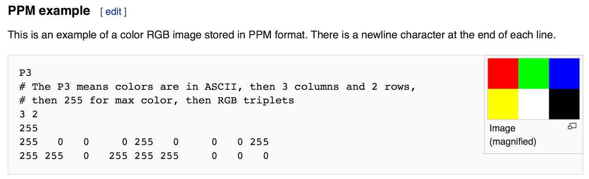

Ray Tracing in One Weekend
《Ray Tracing in One Weekend》是Peter Shirley的Ray Tracing三部曲中的第一本。本节是阅读Ray Tracing in One Weekend时所做的笔记，当前的版本是3.2.3。主要目的是对Ray Tracing有个基本概念的认知，实验代码已上传至我的仓库。
Overview
当大家提起Ray Tracing时，可能指不同的东西。而在这里，Ray Tracing是指Path Tracer，这也是最常见的释义。
我在什么是Ray-Tracing(光线追踪)技术中，找到了一个容易理解的描述: 光线追踪是一种渲染技术，其算法可以跟踪光的传播路径，模拟光源的各个方面以及光在三维环境中发生的反射，漫射，折射等特性，生成更逼真的渲染场景。
本书会带领我们一步步的实现一个Ray Tracing, 最后会得到一个能渲染出漂亮图片的光线追踪器。一些关于本书的额外的资源被上传到这个网站中。
Output an Image
The PPM Image Format
在我们开始写renderer前，我们需要能够看到我们渲染出来的文件。有很多种图片格式，也都挺复杂的。所以我们可以从ppm文件开始。以下是wiki对ppm的介绍：

以下代码用于生成一个简单的ppm文件：
1 |
|
注意：
- 以上代码的像素点，每行从左往右写；
- 以上代码的像素点，每列从上往下写；
- 颜色值范围被约定为(0.0 , 1.0], 这个约定在后续处理中不会被改变，即使在内部使用了high dynamic range。
- 下方的红色从左到右由黑到红，左侧的绿色从上到下由黑到绿，右上角应该是黄色。
Creating an Image File
现在只需要将cout流重定向到文件中即可，我们用>来重定向输出流。
在windows中命令如下：1
inOneWeekend.exe > image.ppm
windows下如果找不到合适的软件打开ppm格式，可以使用ppm viewer在线查看。
注：翻看原仓库的图片时发现原作者用的也是png格式，所以blog里贴都是实验截图。
生成图像如下：
Adding a Progress Indicator
加入一个进度条来查看程序是否进入死循环是个好办法。
图片信息的写入使用标准流std::cout，所以我们使用std::cerr来输出进度。
1 | std::cerr << "\rScanlines remaining: " << j << ' ' << std::flush; |